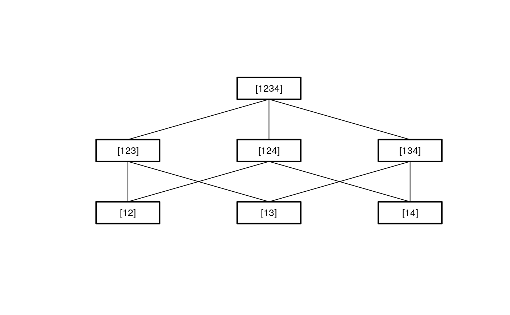

Intersection of hypotheses
IntersectHypotheses.RdGeneration of the hypotheses tree of a closed testing procedure (CTP). The function returns an object of oldClass "ctp.str";
summary and Display can be applied.
IntersectHypotheses(hyplst)
Arguments
| hyplst | A list of integer vectors representing the elementary hypotheses. |
|---|
Value
hypothesisThe hypothesis tree described as lists hypotheses at each intersection level.relationsThe relation structure of the hypotheses tree used for plotting.hypnamesCharacter representations of the hypotheses used for summary tables and plotting.connectionsThe connections used for calculating the adjusted p-values.
Details
Sets of elementary hypotheses are described by lists of integer vectors eg. list(1:2, c(1,3), c(1,4))
if the populations 2, 3 and 4 have to be compared to population 1.
For the generation of the hypothesis tree of a closed testing procedure first all intersections of the elementary hypothese;
then all intersections of these intersections etc. have to be created. The set of hypotheses at each intersection level must be
reduced by deleting double hypotheses and creating unions. The size of the hypothesis tree increases rapidly with growing number of elementary hypotheses,
which can lead to memory and/or time problems!
The intersection procedure ends if a single hypothesis (the global hypothesis) is left.
Note
This procedure is constructed for null-hypotheses describing the equality of the same parameter for different populations.
Warning:
The size of the hypothesis tree increases rapidly with growing number of elementary hypotheses. This can lead to memory and/or time problems!
See also
Examples
#> #> Hypotheses to be tested #> ======================= #> #> hyp.no level hypothesis.name #> 1 1 [12] #> 2 1 [13] #> 3 1 [14] #> 1 2 [123] #> 2 2 [124] #> 3 2 [134] #> 1 3 [1234] #> #> Connection structure of the hypotheses #> ====================================== #> #> Level Connection #> 1 [12] -> [123] #> 1 [12] -> [124] #> 1 [13] -> [123] #> 1 [13] -> [134] #> 1 [14] -> [124] #> 1 [14] -> [134] #> 2 [123] -> [1234] #> 2 [124] -> [1234] #> 2 [134] -> [1234]# compare in a set of six means all others to the fourth mean # five.to.fourth <- IntersectHypotheses(list(c(1,4),c(2,4),c(3,4),c(4,5),c(4,6))) Display(five.to.fourth)